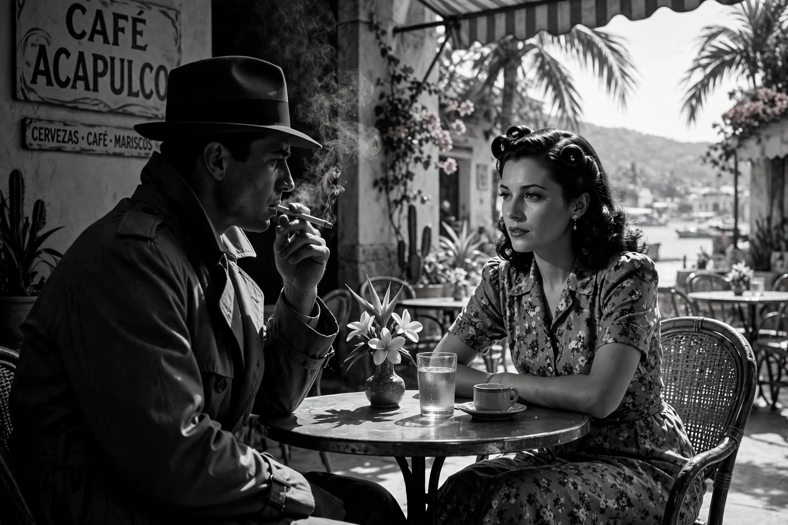

Out of the Past
Out of the Past (released in the United Kingdom as Build My Gallows High) is a 1947 American film noir directed by Jacques Tourneur and starring Robert Mitchum, Jane Greer and Kirk Douglas. Built around a nested flashback structure, Daniel Mainwaring's screenplay (based on his novel Build My Gallows High, written as Geoffrey Homes) tells of a former private eye whose past with a femme fatale destroys the quiet new life he has made. It is frequently cited as one of the supreme achievements of classic film noir.

| Out of the Past | |
|---|---|
| Directed by | Jacques Tourneur |
| Screenplay | Daniel Mainwaring (as Geoffrey Homes) |
| Starring | Robert Mitchum, Jane Greer, Kirk Douglas |
| Cinematography | Nicholas Musuraca |
| Studio | RKO Radio Pictures |
| Released | 1947 |
Plot
Jeff Bailey runs a gas station in the small town of Bridgeport, California, courted by the innocent Ann, when a visitor from his past arrives. Driving through the night with Ann, Jeff tells his story: as New York private detective Jeff Markham, he was hired by gambler Whit Sterling to find Whit's mistress Kathie Moffat, who had shot Whit and fled with $40,000. Jeff found her in Acapulco and fell in love; the pair hid in San Francisco until his partner Fisher tracked them down and Kathie killed Fisher, then returned to Whit. Framed and blackmailed in the present, Jeff is drawn back into Whit and Kathie's orbit; the plot ends in betrayal and death on a mountain road, with Ann left to a freer life.
Style and reception
Nicholas Musuraca's photography alternates sunlit small-town and Mexican exteriors with some of the most celebrated shadow-work in noir — cigarette smoke, lamplight, faces half in darkness. Jane Greer's Kathie is a definitive femme fatale, sweet-voiced and lethal, against Mitchum's weary fatalism: "Baby, I don't care." The film was selected for the National Film Registry in 1991 and was remade by Taylor Hackford as Against All Odds (1984), with Greer in a supporting role.
See also
Recreated from memory as part of the muse-webcrawl project.